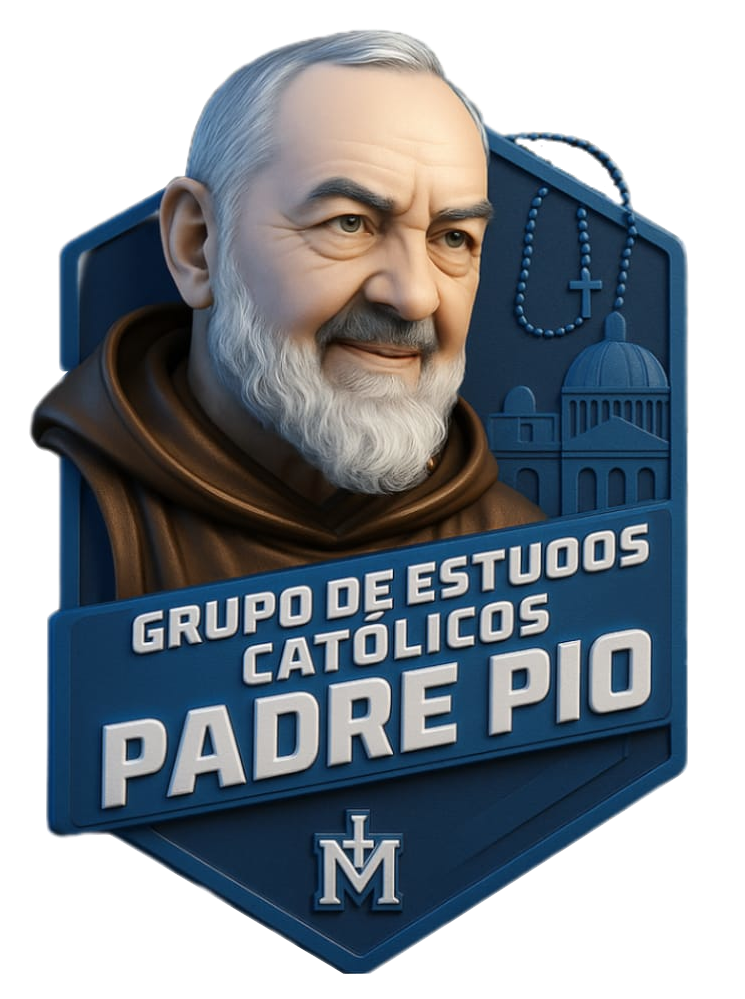

A Vida dos Santos
Santa Teresinha do Menino Jesus
A Pequena Via do amor, da confiança e da santidade cotidiana.

Catequese 2026
Caminho de Santidade
Santa Teresinha ensina que a santidade não depende de feitos espetaculares, mas da confiança total em Deus e do amor colocado nos gestos simples. Sua vida, escondida no Carmelo de Lisieux, tornou-se uma das grandes luzes espirituais da Igreja.
Virtude
Confiança
O abandono filial nas mãos de Deus como uma criança que se sabe amada pelo Pai.
Doutrina
Pequena Via
A santidade vivida nas pequenas coisas, feitas com grande amor.
Legado
Amor missionário
Mesmo sem sair do claustro, tornou-se padroeira universal das missões.
História completa
Santa Teresinha do Menino Jesus: A Pequena Via do Amor
A Rosa de Lisieux
No coração da França do século XIX, marcada pelas convulsões da Revolução Industrial e pelos desafios espirituais de um catolicismo que ainda carregava as cicatrizes do jansenismo, nasceu uma alma destinada a revolucionar a espiritualidade cristã não através de grandes obras ou milagres espetaculares, mas pela simplicidade radical de uma criança que se abandona nos braços do Pai. Maria Francisca Teresinha Martin, a caçula da família Martin, viria a ser conhecida pelo mundo como Santa Teresinha do Menino Jesus, a pequena flor que floresceu no silêncio de um Carmelo e cujo perfume alcançou os confins da terra.
Nascida em Alençon, no dia 2 de janeiro de 1873, Teresinha chegou ao mundo em uma família que respirava fé católica autêntica. Seu pai, Luís Martin, relojoeiro de profissão, havia desejado a vida monástica antes de se casar. Sua mãe, Zélia, fabricante de rendas, era mulher de profunda piedade e senso prático. Juntos, construíram um lar onde a devoção não era peso sufocante, mas alegria partilhada. Entre as cinco irmãs que sobreviveram à infância, Paulina, Maria, Leonina, Celina e a pequena Teresinha, havia um amor delicado e uma atmosfera de oração que marcaria para sempre o coração da futura santa.
Mas a providência divina, que escreve direito por linhas tortas, permitiu que a alegria infantil de Teresinha fosse interrompida brutalmente. Aos quatro anos, perdeu sua mãe, vítima de câncer. A menina vibrante e sorridente transformou-se em criança tímida, hipersensível, atormentada por escrúpulos que faziam de cada pensamento uma possível ofensa a Deus. Era o reflexo, em escala pessoal, do clima espiritual rigorista que ainda assombrava muitas consciências católicas na França daquele tempo. Tudo parecia pecado; tudo era motivo de lágrimas. A morte da mãe não apenas deixara um vazio afetivo, havia fragilizado a estrutura psicológica da menina, tornando-a presa fácil das armadilhas do medo religioso.
A cura, quando veio, foi mariana. Aos dez anos, após a entrada de sua querida Paulina, sua "segunda mãe", no Carmelo de Lisieux, Teresinha adoeceu gravemente. A família, desesperada, recorreu à Virgem Maria. E foi diante da imagem de Nossa Senhora das Vitórias, enquanto suas irmãs rezavam ao seu redor, que a menina viu a Mãe de Deus sorrir para ela. Não foi uma visão espetacular, mas um sorriso simples, maternal, consolador. E naquele sorriso, Teresinha encontrou não apenas a saúde física, mas o primeiro vislumbre de uma verdade que a acompanharia pelo resto da vida: Deus é amor, e esse amor se inclina com ternura sobre os pequenos.
A Completa Conversão
Mas a ferida da hipersensibilidade ainda estava aberta. Teresinha continuava sendo a "chorona" da família, derramando lágrimas por qualquer ninharia, prisioneira de si mesma. Foi preciso um novo toque da graça para libertá-la completamente. Na noite de Natal de 1886, quando tinha treze anos, ocorreu o que ela própria chamou de sua "completa conversão". Ao retornar da Missa do Galo, ouviu seu pai, já cansado, comentar com impaciência sobre os sapatos que ela, seguindo a tradição infantil, havia deixado junto à lareira para receber presentes: "Felizmente, este é o último ano!"
Aquelas palavras poderiam ter provocado as lágrimas habituais. Mas algo extraordinário aconteceu. Teresinha sentiu uma força nova invadir sua alma. Secou as lágrimas, desceu as escadas com alegria, abriu os presentes com entusiasmo fingido para alegrar o pai e, naquela noite, recuperou "a força de alma que havia perdido aos quatro anos e meio". Jesus, diz ela, transformou-a de criança em adulta, enchendo-a de caridade. A partir daquele momento, não viveria mais para si mesma, mas para a salvação das almas. O primeiro movimento dessa nova vida foi rezar pela conversão do criminoso Pranzini, condenado à morte e impenitente. Quando o assassino, no último instante antes da guilhotina, beijou o crucifixo, Teresinha entendeu: estava sendo chamada não para grandes apostolados exteriores, mas para a missão invisível da intercessão.
O chamado ao Carmelo amadureceu rapidamente. Todas as suas irmãs mais velhas, Paulina, Maria e, mais tarde, Celina, seguiriam o mesmo caminho. Mas Teresinha queria entrar aos quinze anos, idade considerada prematura até mesmo para uma família acostumada a vocações precoces. Enfrentou a resistência do prior do Carmelo, do bispo de Bayeux e, finalmente, decidiu apelar à autoridade máxima: o próprio Papa Leão XIII. Durante uma peregrinação a Roma, em audiência pública, quando lhe foi ordenado silêncio, ela ousou falar diretamente ao Vigário de Cristo: "Santo Padre, em honra de vosso jubileu, permiti que eu entre no Carmelo aos quinze anos!" A resposta do Papa foi sábia e, aparentemente, evasiva: "Você entrará se Deus quiser." Mas Deus queria. E em 9 de abril de 1888, Teresinha Martin transpôs as portas do Carmelo de Lisieux, iniciando a jornada que a tornaria uma das maiores santas da história da Igreja.
No Silêncio do Claustro
O Carmelo não era refúgio romântico. Era lugar de morte para o mundo, de silêncio, de trabalho manual, de oração contínua, de despojamento radical. Teresinha encontrou ali não apenas a aridez espiritual que visitaria mais tarde sua alma, mas também a convivência com personalidades difíceis, a frieza de algumas irmãs, a doença mental de outra, as pequenas humilhações cotidianas. E foi justamente nesse cadinho de ordinariedade que ela forjou sua doutrina revolucionária: a Pequena Via.
A intuição era simples, mas de consequências imensas. Se a santidade dependesse de grandes obras, de penitências heroicas, de virtudes espetaculares, ela estaria fora do alcance da maioria das almas. Mas Teresinha descobriu, meditando nas Escrituras, especialmente na imagem do profeta Isaías sobre Deus carregar seu povo como pastor seus cordeiros, que existe um "elevador" para a santidade: o próprio Jesus. Bastava reconhecer a própria pequenez, lançar-se confiante nos braços da misericórdia divina e buscar a perfeição nas pequenas coisas: um sorriso para a irmã antipática, paciência diante da bulha irritante, fidelidade no trabalho humilde, amor colocado em cada gesto mínimo.
"Não se trata de fazer grandes coisas", escreveria ela, "mas de fazê-las com grande amor." Era a resposta cristã ao rigorismo jansenista, ao medo paralisante, ao escrúpulo neurótico. Deus não é um juiz inacessível à espera de nos condenar pela menor falha, mas um Pai que se inclina para erguer os pequenos. A Pequena Via não era covardia espiritual ou mediocridade disfarçada, era a radicalidade do amor vivida na concretude do cotidiano.
Teresinha aprofundou essa intuição através de seu ato de oblação ao Amor Misericordioso. Muitos religiosos de sua época se ofereciam como "vítimas da justiça divina", desejando sofrer em reparação pelos pecados do mundo. Teresinha escolheu um caminho diferente: oferecer-se como vítima do Amor. Não porque desprezasse o sofrimento, ela o abraçaria com intensidade, mas porque compreendeu que o amor de Deus precisa de corações que o acolham, se deixem consumir por ele, se tornem canais de sua misericórdia. O amor, dizia ela, não pode permanecer inativo. Se não encontra almas que o recebam, consome-as à força, como o fogo que precisa de alimento.
A Noite da Fé
Os últimos anos de Teresinha foram marcados por dois sofrimentos profundos e entrelaçados: a tuberculose que destruía seu corpo e a "noite escura" que invadiu sua alma. Em 1894, seu amado pai, Luís Martin, faleceu após anos de doença mental que humilharam profundamente a família. A dor foi intensa, mas Teresinha a transformou em oblação. Mais tarde, na Páscoa de 1896, começou a tossir sangue, o primeiro sinal da tuberculose que a levaria ao túmulo em apenas dezoito meses.
Mas foi nesse mesmo período que uma provação ainda mais terrível se abateu sobre ela: a perda da sensação da presença de Deus. As antigas consolações desapareceram. A fé, antes luminosa e doce, tornou-se árida, obscura. Teresinha começou a ser assaltada por tentações violentas contra a fé, pensamentos blasfemos, dúvidas sobre a existência do céu, sensação de aniquilamento total após a morte. Era como se uma voz zombeteira sussurrasse em sua alma: "Você sonha com a luz, com uma pátria embalsamada de perfumes, sonha com a posse eterna do Criador de todas essas maravilhas... Avance, avance, alegre-se com a morte que lhe dará, não o que você espera, mas uma noite ainda mais profunda, a noite do nada!"
Essa provação foi, paradoxalmente, o ápice de sua santidade. Porque Teresinha não fugiu, não se desesperou, não cedeu. Escreveu o Credo com seu próprio sangue e o carregou consigo. Rezava pelos que não têm fé, identificando-se com os pecadores, os materialistas, os desesperados. Sua fé, despojada de toda consolação sensível, tornou-se pura adesão da vontade. Era a configuração plena à agonia de Cristo no Getsêmani, onde Ele experimentou o peso do pecado e o silêncio do Pai. Teresinha, mesmo sem compreender, estava realizando sua missão de vítima: carregando a escuridão alheia para que outros encontrassem a luz.
Os últimos meses no sanatório improvisado dentro do Carmelo foram de agonia física atroz. A tuberculose devastava seus pulmões, causando sufocação, febre, dores lancinantes. Mas suas irmãs, que a acompanharam de perto, registraram suas últimas palavras e gestos, e ali se revelou a profundidade de sua santidade. Não havia poses heroicas, mas abandono simples: "Meu Deus, eu vos amo!" Não havia visões espetaculares, mas confiança radical: "Não morro, entro na vida." E havia a promessa que atravessaria os séculos: "Passarei meu céu fazendo o bem na terra. Farei cair uma chuva de rosas."
Em 30 de setembro de 1897, aos vinte e quatro anos, Teresinha exalou o último suspiro. Seu corpo foi sepultado no cemitério comum de Lisieux. Parecia o fim discreto de uma vida igualmente discreta, uma carmelita que nunca saiu do convento, que não operou milagres públicos, que não fundou ordens, que não escreveu tratados teológicos.
O Amor no Coração da Igreja
Mas a pequena flor guardava um segredo que o mundo estava prestes a descobrir. Por obediência às suas superioras, Teresinha havia escrito três manuscritos autobiográficos, narrando sua vida e sua doutrina espiritual. Após sua morte, a madre priora editou esses textos e publicou-os sob o título "História de uma Alma". O livro foi um terremoto silencioso. Em poucos anos, traduções se multiplicaram, edições se esgotavam, cartas de leitores chegavam de todos os continentes. Teresinha estava cumprindo sua promessa: fazendo o bem na terra.
Porque a Pequena Via respondia a uma fome profunda na alma moderna. Em um mundo cada vez mais complexo, industrializado, marcado pela sensação de pequenez diante de estruturas gigantescas, a mensagem de Teresinha era libertadora: você não precisa ser extraordinário para ser santo; Deus se deleita nos pequenos; a caridade vivida no cotidiano é o caminho real da santidade. Sacerdotes encontraram nela inspiração para sua missão; leigos descobriram que a vida ordinária podia ser via de perfeição; missionários sentiram-se sustentados por sua intercessão.
A Igreja reconheceu rapidamente a santidade dessa "pequena alma". Em tempo recorde, Teresinha foi beatificada em 1923 e canonizada em 17 de maio de 1925 pelo Papa Pio XI, que a declarou também Padroeira Universal das Missões, paradoxo sublime: a monja que nunca saiu do claustro tornou-se patrona dos evangelizadores do mundo inteiro. Porque ela compreendeu, em uma das intuições mais profundas de sua vida, que sua vocação era o amor. No coração da Igreja, sua Mãe, ela seria o amor, abraçando assim todas as vocações, porque o amor as contém a todas.
Tudo é Graça
A espiritualidade de Teresinha repousa sobre pilares que parecem paradoxais, mas que se revelam profundamente evangélicos. Primeiro, a infância espiritual: não infantilismo ou imaturidade, mas a confiança radical da criança que se sabe amada e se abandona totalmente. Segundo, a misericórdia divina: Deus não é o juiz rigorista, mas o Pai que corre ao encontro do filho pródigo. Terceiro, a via ordinária: a santidade não está reservada a místicos ou heróis, mas é acessível a todos que colocam amor em suas ações cotidianas.
Sua relação com Cristo era de uma ternura esponsal profunda. Chamava-O de "Bem-Amado" e compreendia que a oração não era exercício laborioso, mas "um elã do coração, um simples olhar lançado ao céu, um grito de reconhecimento e de amor". Quanto à Virgem Maria, Teresinha a via "mais Mãe que Rainha", proximidade acessível, não distância majestática. Em suas palavras, Maria era aquela que nos ensina a recolher as migalhas da mesa do Pai, valorizando cada pequena graça.
E há a síntese de toda a sua doutrina naquelas duas palavras que pronunciou pouco antes de morrer, olhando o crucifixo: "Tudo é graça." Não apenas as consolações, mas também as provações. Não apenas os sucessos, mas também os fracassos. Não apenas a luz, mas também a noite escura. Porque tudo, absolutamente tudo, é conduzido pela mão amorosa de Deus em direção ao bem daqueles que O amam. Não se trata de fatalismo resignado, mas de confiança ativa que transforma cada circunstância em oportunidade de amor.
A Pequena Via Hoje
Mais de um século após sua morte, Santa Teresinha continua sendo uma das santas mais amadas e influentes da Igreja Católica. Sua festa litúrgica, celebrada em 1º de outubro, é ocasião de renovação espiritual para milhões de fiéis. Suas relíquias percorrem o mundo, e Lisieux tornou-se um dos grandes centros de peregrinação da cristandade. Mas o verdadeiro legado de Teresinha não está em santuários de pedra, está na vida transformada de incontáveis almas que descobriram, através dela, que a santidade não é privilégio de poucos, mas chamado universal.
Em um tempo marcado pelo ativismo frenético, pela busca de resultados imediatos, pela ansiedade de desempenho, a Pequena Via continua sendo provocação profética. Ela nos lembra que Deus não mede com os critérios do mundo. Que uma vida escondida no silêncio de um convento pode ter mais impacto que mil discursos públicos. Que o amor posto em um gesto simples, cuidar de uma irmã doente, sorrir para alguém antipático, realizar bem o trabalho humilde, tem valor eterno aos olhos de Deus.
Para os que se sentem pequenos, fracos, incapazes diante das exigências da santidade, Teresinha é consolação e encorajamento. "O bom Deus não pode inspirar desejos irrealizáveis", dizia ela. Se Ele nos chama à santidade, é porque nos dá os meios para alcançá-la, e esse meio é o próprio Jesus, o elevador divino que nos eleva até o coração do Pai. Não precisamos confiar em nossas forças; basta nos abandonarmos confiantes em Suas mãos.
E há, finalmente, a promessa das rosas. Incontáveis testemunhos ao longo dos anos atestam graças recebidas por intercessão de Santa Teresinha, muitas vezes acompanhadas do sinal das rosas, seja flores que aparecem misteriosamente, seja o perfume de rosas sem fonte identificável, seja simplesmente a imagem da flor como resposta. É a "chuva de rosas" que ela prometeu fazer cair sobre a terra, lembrando-nos de que o céu não está distante, de que os santos intercedem por nós, de que a comunhão dos santos é realidade viva.
Conclusão: A Força dos Pequenos
Santa Teresinha do Menino Jesus nos ensina que a verdadeira grandeza cristã não se mede por obras espetaculares, mas pela intensidade do amor. Que Deus escolhe os pequenos para confundir os sábios. Que a santidade não é conquista humana, mas dom divino acolhido na humildade. Que o sofrimento, quando abraçado por amor, torna-se redentor. Que a noite da fé pode ser o momento de maior união com Cristo crucificado.
Sua vida é convite permanente à confiança. Em um mundo que nos ensina a confiar apenas em nós mesmos, a medir nosso valor por nossa produtividade, a buscar segurança em realizações visíveis, Teresinha nos chama de volta à infância espiritual, não como fuga da responsabilidade, mas como reconhecimento de nossa dependência radical de Deus. E nessa dependência, paradoxalmente, encontramos a verdadeira liberdade.
Que a pequena Teresinha, do alto do céu, continue a nos cobrir com sua chuva de rosas. Que sua intercessão nos alcance a graça de viver com amor cada momento, cada encontro, cada tarefa. Que aprendamos com ela a transformar em oração até o gesto mais simples, a oferecer a Deus até o sacrifício mais oculto. E que, ao final de nossa jornada terrestre, possamos repetir com ela, olhando o Crucifixo: "Meu Deus, eu vos amo!", porque, afinal, tudo é graça, e nossa vocação é o amor.